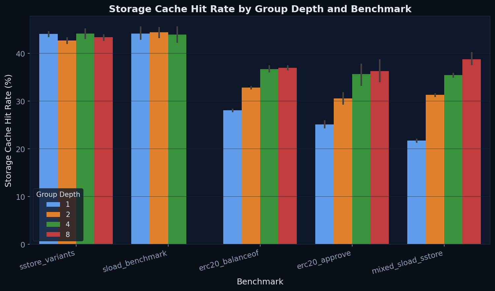
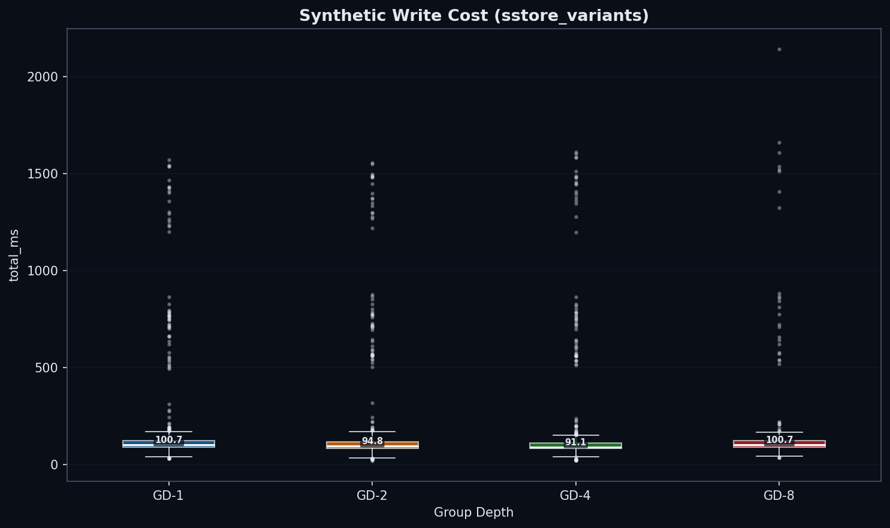
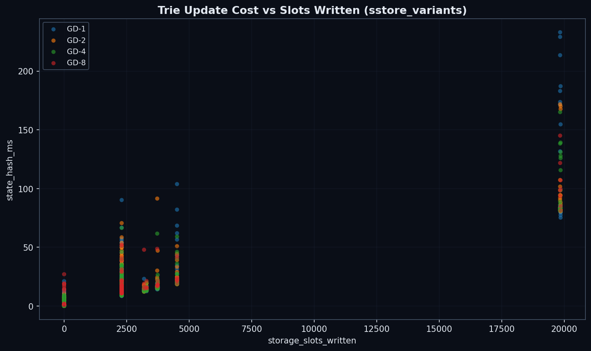

Executive Summary
The binary trie is on the Ethereum protocol strawman as a future state tree replacement. No binary trie implementation has been benchmarked at scale — not group depth, not anything else. With this transition on the roadmap, assessing performance characteristics is a prerequisite for informed prototyping. The geth implementation (EIP-7864) exposes a --bintrie.groupdepth parameter that controls how binary levels are packed into on-disk nodes; this study benchmarks seven configurations to determine the optimal setting.
What we tested
Seven group-depth configurations (GD-1 through GD-6, plus GD-8) on identical 360 GB databases with ~400 million state entries. Five benchmark types — two synthetic (raw SLOAD/SSTORE) and three ERC20 contract workloads — each run 9 times under a cold-cache protocol. All results use medians with Mann-Whitney U significance tests.
What we found
- Reads confirm the intuition (§4): Wider trees read faster. GD-8 achieves more than double the read throughput of GD-1 (5.59 vs 2.65 Mgas/s). GD-3 through GD-8 range from 5.5 to 6.1 Mgas/s by throughput, excluding GD-5 whose elevated block size confounds the comparison.
- Writes reveal a sharper optimum (§5): GD-5 is the write champion at 601 ms — 11% faster than GD-4 (678 ms) and 39% faster than GD-8 (982 ms). By throughput, GD-6 (6.27 Mgas/s) outperforms GD-8 (4.47 Mgas/s) despite higher raw ms from processing more gas per block.
- The sweet spot is GD-5 (§6): GD-5 wins writes by 11% and mixed workloads by 16% over GD-4, with competitive read throughput (7.08 vs 5.46 Mgas/s). The optimal balance lies at 5 bits per node, not 4.
How to read this post
§2 Background covers the binary trie and group depth concept. §3 Methodology details the benchmark setup (collapsible). §4–§6 present the results in a narrative arc: reads, writes, then the trade-off. §7 Patterns examines cross-cutting observations, and §8 Conclusions gives the recommendation and open questions.
Background
What is the Binary Trie?
EIP-7864 proposes replacing Ethereum's Merkle Patricia Trie (MPT) with a binary trie. The binary trie unifies the account trie and all storage tries into a single tree, uses SHA-256 for hashing instead of Keccak-256, and stores 32-byte stems that map to groups of 256 values. This design simplifies witness generation for stateless clients and enables more efficient proofs.
The transition from MPT to a binary trie is one of the most consequential changes to Ethereum's state layer. Performance characteristics of the new structure will directly affect block processing time, sync speed, and validator economics.
What is Group Depth?
The trie is always binary at the fundamental level — every internal node has exactly two children (left for bit 0, right for bit 1). Group depth controls how many binary levels are bundled into a single on-disk node. At GD-N, each stored node encapsulates an N-level binary subtree, so it appears to have 2N children when viewed from the outside:
- GD-1: 1 binary level per node → 2 child pointers, 256 nodes on the path to a leaf
- GD-2: 2 binary levels per node → 4 child pointers, 128 nodes on path
- GD-3: 3 binary levels per node → 8 child pointers, ~86 nodes on path
- GD-4: 4 binary levels per node → 16 child pointers, 64 nodes on path
- GD-5: 5 binary levels per node → 32 child pointers, ~52 nodes on path
- GD-6: 6 binary levels per node → 64 child pointers, ~43 nodes on path
- GD-8: 8 binary levels per node → 256 child pointers, 32 nodes on path
Think of it like a zip code: GD-1 reads your address one digit at a time (256 steps), while GD-8 reads 8 digits at once (32 steps). Fewer steps means fewer disk reads — but each "bundled node" is larger and more expensive to update, because the binary subtree inside it must be rehashed.
The trade-off is straightforward in theory: reads benefit from shallow trees (fewer disk I/O operations to reach a leaf), while writes suffer from wide nodes (more internal hashing when a node is modified). The question is where the crossover point lies.
Methodology
Methodology Details (click to collapse)
Benchmark Setup
| Parameter | Value |
|---|---|
| Machine | QEMU VM — 8 vCPUs, 30 GB RAM, 3.9 TB SSD, Ubuntu 24.04 LTS |
| Database | ~360 GB, ~400M accounts + slots |
| Configs | GD-1, GD-2, GD-3, GD-4, GD-5, GD-6, GD-8 (Pebble, the LSM-tree storage engine used by geth) 4KB block size |
| Protocol | Cold cache (OS + Pebble caches dropped between runs) |
| Runs | 10 per benchmark, run 1 excluded as warm-up |
| Gas target | 100M gas per block |
Statistical Approach
- Per-run block medians aggregated across 9 retained runs
- Mann-Whitney U test for pairwise comparisons (non-parametric)
- Effect sizes reported as percentage difference from baseline (GD-1)
- Coefficient of variation (CV%) for consistency assessment
Benchmark Taxonomy
a) Synthetic benchmarks — sstore_variants (writes) and sload_benchmark (reads). These use EIP-7702 delegations with sequential storage slots. Keys are numerically sequential, causing heavy prefix sharing in the trie.
b) ERC20 benchmarks — balanceof (reads), approve (writes), and mixed. These use real ERC-20 contract code. Storage keys are keccak hashes of random addresses, producing uniformly distributed access patterns across the trie.
Block Composition Note
Faster configs naturally process more transactions per 10-second block window (dev.period=10), resulting in higher gas per block for GD-5 and GD-6. This is correct behavior — faster tree traversal means higher throughput. However, it means raw millisecond values cannot be compared directly across configs with different block compositions. Mgas/s (throughput) is the correct comparison metric as it normalizes for gas differences. Where raw ms is shown, it reflects the actual block processing time for that config’s natural block size.
Act I: Reads Confirm the Intuition
Wider trees should mean faster reads. And they do.
Synthetic Reads: The Baseline


| Group Depth | Median Read (ms) | vs GD-1 |
|---|---|---|
| GD-1 | 53.0 | baseline |
| GD-2 | 48.0 | −9% |
| GD-4 | 47.6 | −10% |
| GD-8 | no data | |
Only ~10% improvement from GD-1 to GD-4. Sequential access doesn't differentiate group depths because shared prefixes keep the working set small and cache-friendly regardless of tree shape.
ERC20 Reads: Where Depth Matters

| GD | state_read (ms) | total (ms) | Mgas/s | vs GD-1 (Mgas/s) |
|---|---|---|---|---|
| 1 | 5,878 | 6,284 | 2.65 | baseline |
| 2 | 3,840 | 4,230 | 3.95 | +49% |
| 3 | 2,416 | 2,768 | 6.14 | +132% |
| 4 | 2,677 | 3,067 | 5.46 | +106% |
| 5 | 4,036 | 4,742 | 7.08 | +167% |
| 6 | 2,149 | 2,581 | 5.89 | +122% |
| 8 | 2,598 | 2,977 | 5.59 | +111% |
Why the dramatic difference from synthetic? Keccak scatters keys uniformly, forcing a full traversal from root to leaf. GD-1 must descend 256 levels; GD-8 only 32. Every level is a potential disk seek. Random access exposes the full depth penalty.
GD-3 (2,768 ms, 6.14 Mgas/s) outperforms GD-4 (3,067 ms, 5.46 Mgas/s) on reads despite a longer path (~86 vs 64 nodes). GD-3’s smaller node serialization (~256 bytes vs ~512 bytes for GD-4) may interact more favorably with Pebble’s 4KB block size. This non-monotonic result strengthens the case for exploring the GD × block-size matrix (Open Question #3).
Per-slot cost: synthetic reads cost ~0.02 ms/slot. ERC20 reads cost ~0.4–1.0 ms/slot — a 40× penalty from random access patterns.
This 40× ratio aligns closely with raw NVMe I/O measurements: Gary Rong’s disk page-read benchmarks show random 4KB reads at 77 MB/s vs 3,306 MB/s sequential (43×), suggesting the penalty is dominated by I/O access patterns rather than Pebble overhead.
The Cache Mechanism

| Benchmark | GD-1 | GD-2 | GD-3 | GD-4 | GD-5 | GD-6 | GD-8 |
|---|---|---|---|---|---|---|---|
| sstore (synthetic) | 43.5% | 42.5% | — | 42.7% | — | — | 42.6% |
| sload (synthetic) | 42.4% | 42.0% | — | 42.8% | — | — | — |
| balanceOf (ERC20) | 28.0% | 32.8% | 39.7% | 36.5% | 64.8% ⚠ | 39.4% | 36.9% |
| approve (ERC20) | 24.8% | 30.4% | 32.7% | 33.6% | 36.4% | 63.7% ⚠ | 34.5% |
| mixed (ERC20) | 21.8% | 31.4% | 34.2% | 35.2% | 38.8% | 39.6% | 36.5% |
balanceOf is a read-only ERC20 function (returns a token balance). approve is a write operation (sets a spending allowance, modifying storage). ERC20 is the most common contract type on Ethereum mainnet, making it a representative benchmark target. The ERC20 used here is a minimal implementation — results indicate clear trends in how group depth affects read vs write performance, though production contracts with more complex storage layouts may show variation.
Two distinct patterns emerge. Synthetic benchmarks: cache rates are flat at ~42–44% regardless of group depth — sequential access is inherently cache-friendly. ERC20 benchmarks: cache rates increase by ~15 percentage points from GD-1 (21–28%) to GD-4/5 (33–39%). In shallower trees, upper-level nodes are shared by many keys — the “shared prefix” effect. Rates plateau at ~39% for configs with standard block sizes, as the 256-bit keyspace is too sparse for deeper cache reuse. GD-5 balanceof (64.8%) and GD-6 approve (63.7%) both show elevated cache rates. These are block-composition artifacts: both configs process approximately 2× the transactions per block for their respective benchmarks, causing stronger intra-block cache warming. GD-6’s balanceof and mixed cache rates normalized after re-running with proper cold-cache protocol (65.5%→39.4%, 63.2%→39.6%).
So far, wider is better for reads. Then we tested writes.
Act II: The Write Surprise
This is the most important finding in the study.

| GD | state_read | trie_updates | commit | Write Cost | Total (ms) | Mgas/s |
|---|---|---|---|---|---|---|
| 1 | 812 | 690 | 76 | 762 | 1,645 | 2.67 |
| 2 | 483 | 393 | 61 | 457 | 993 | 4.42 |
| 3 | 391 | 308 | 65 | 373 | 811 | 5.39 |
| 4 | 313 | 254 | 53 | 308 | 678 | 6.47 |
| 5 | 263 | 220 | 63 | 283 | 601 | 7.30 |
| 6 | 495 | 575 | 138 | 713 | 1,312 | 6.27 |
| 8 | 313 | 433 | 158 | 603 | 982 | 4.47 |
trie_updates = state_hash_ms (AccountHashes + AccountUpdates + StorageUpdates) — this metric covers the full trie mutation and rehash phase, not just hashing. Write Cost is the median of per-block (trie_updates + commit); this may differ slightly from the sum of the component medians due to properties of the median function. GD-6 was re-run with proper cold-cache protocol (OS page cache drops via sudo tee /proc/sys/vm/drop_caches). CV improved from 87% to 24%, confirming reliable measurements.
Why? The Internal Subtree
Each trie node at group depth g contains an internal binary subtree with 2g−1 nodes that must be rehashed on every write. This is the mechanism behind the surprise.
GD-8's path is 2× shorter than GD-4 (32 vs 64 levels), but each node is ~17× more expensive to rehash (255 vs 15 internal operations). GD-5 hits the sweet spot: 31 internal nodes per node × ~52 nodes on path = ~1,612 total ops, compared to GD-4's 960 and GD-8's 8,160. GD-5 finds a minimum because its path is short enough to benefit from fewer I/Os, while its per-node rehashing cost hasn't yet exploded.
Note: The 17× ratio (255 vs 15 internal hash operations) is the theoretical upper bound from the data structure definition. Our benchmarks support the mechanism: GD-8 trie update costs are 1.71× more than GD-4 (433ms vs 254ms), consistent with random writes modifying a fraction of each node's internal subtree. The geth implementation (go-ethereum/trie) is the authoritative source for the exact rehashing algorithm.
Node Serialization Size
Each trie node stores up to 2N child pointers (32 bytes each). A GD-8 node holds up to 256 × 32 = ~8 KB. A GD-4 node: 16 × 32 = ~512 bytes. The 16× size difference has cascading effects:
- Pebble cache efficiency: Fewer GD-8 nodes fit in a given cache budget
- Write amplification: Larger serialized nodes increase LSM compaction overhead
- Commit cost: Commit costs scale with total bytes serialized per write path. GD-8 nodes (~8 KB each × 32 path nodes ≈ 256 KB per write) cost 158 ms vs GD-4’s 53 ms (~512 bytes × 64 nodes ≈ 32 KB). GD-6’s apparent commit cliff (138 ms) is a block-size artifact: normalized for 2× gas, GD-6 commit is ~69 ms, in line with GD-4/5.
Why Synthetic SSTORE Didn't Show This
Sequential slot access clusters writes into the same trie branch, enabling Pebble's write batch to amortize commit costs. The trie update penalty is also reduced because adjacent keys modify the same internal subtrees. The ERC20 benchmark's random access pattern defeated both amortization mechanisms.


Even with sequential access, GD-8 showed a slight elevation in write cost — a hint of the penalty that ERC20 workloads would expose fully.
Act III: The Trade-off
The Verdict
| Criterion | GD-4 | GD-5 | GD-8 | Winner |
|---|---|---|---|---|
| Reads (Mgas/s) | 5.46 | 7.08 | 5.59 | GD-5 by 30% vs GD-4 (⚠ higher cache warmth from 2× block size) |
| Writes (approve, ms) | 678 | 601 | 982 | GD-5 by 11% (p < 1e-9) |
| Mixed (ms) | 2,302 | 1,931 | 2,145 | GD-5 by 16% (p < 1e-3) |
| Synthetic writes | 91.6 ms | — | 101.5 ms ⚠ | GD-4 by 10% (no GD-5 data) |
Mixed Workloads


| GD | state_read (ms) | trie_updates (ms) | commit (ms) | total (ms) | Mgas/s |
|---|---|---|---|---|---|
| 1 | 4,711 | 345 | 53 | 5,363 | 2.18 |
| 2 | 3,003 | 217 | 44 | 3,518 | 3.35 |
| 3 | 2,017 | 142 | 42 | 2,419 | 4.84 |
| 4 | 1,893 | 138 | 43 | 2,302 | 5.13 |
| 5 | 1,524 | 133 | 48 | 1,931 | 6.23 |
| 6 | 1,893 | 146 | 56 | 2,371 | 6.06 |
| 8 | 1,612 | 221 | 87 | 2,145 | 5.43 |
GD-5 wins mixed workloads decisively: 1,931 ms vs 2,302 ms for GD-4 (−16%, p < 1e-3). Its read advantage (1,524 ms state_read vs 1,893 ms for GD-4) combines with the lowest trie update cost (133 ms) to dominate the combined workload. GD-6 shows moderate trie updates (146 ms) and commit costs (56 ms) in mixed workloads — the rehashing penalty visible in pure writes (575 ms) is diluted when reads dominate. GD-6’s mixed penalty is driven by state_read (1,893 ms vs 1,524 ms for GD-5).
Cross-Cutting Patterns
Where Does Time Go?


State reads dominate ERC20 block processing time across all group-depth configurations, accounting for 50–85% of total time. Trie update and commit costs are negligible for read-only benchmarks (balanceOf) but become the dominant cost component for writes (approve) — especially at higher group depths where internal subtree rehashing is most expensive.
Overall Throughput

Hardware Context: NVMe I/O Characteristics
Disk page-read benchmarks by Gary Rong on NVMe (Samsung 990 Pro) provide hardware context for interpreting our results:
- Random vs sequential: 4KB random reads = 77 MB/s (50.6 μs) vs 3,306 MB/s sequential — a 43× gap that closely matches our 40× per-slot penalty.
- Page size matters: Random 16KB reads achieve 2.3× throughput of 4KB (174 vs 77 MB/s) with only 1.8× latency. Wider group depths produce larger nodes that could benefit from larger Pebble block sizes.
- Queue depth is transformative: QD=1→QD=8 improves random 4KB throughput by 8.7× (77→673 MB/s). Parallel EVM could unlock this, compressing read latency differences between configs.
- Sublinear latency growth: 4KB→64KB = 16× data, but only 2.3× latency (50.6→117.3 μs). NVMe’s internal parallelism means larger I/O requests are disproportionately efficient.
These measurements use direct page reads bypassing filesystem caches — analogous to our cold-cache protocol. The benchmark hardware (Samsung 990 Pro) differs from our QEMU VM’s virtual disk, so absolute numbers won’t match, but the ratios reveal fundamental NVMe characteristics relevant to group depth optimization.
Conclusions
Confidence: High (ERC20 write and mixed benchmarks). GD-5 wins writes by 11% over GD-4 (p < 1e-9) and mixed by 16% (p < 1e-3).
Root Causes
The recommendation rests on a three-step mechanism that governs every state access in the binary trie:
- Traverse — descend from root to leaf. Cost proportional to tree depth. Favors wider trees (GD-8: 32 levels vs GD-5: ~52 vs GD-4: 64 levels).
- Rehash — recompute the internal subtree of every node on the path back to root. Cost proportional to 2g−1 per node. Favors narrower trees (GD-4: 15 ops/node, GD-5: 31 ops/node, GD-8: 255 ops/node).
- Commit — serialize and write modified nodes to disk. Cost proportional to node size. Favors narrower trees.
GD-5 finds the minimum of the traversal × rehashing trade-off. Its path is 19% shorter than GD-4 (~52 vs 64 nodes), and each node's 31 internal operations remain manageable. At GD-6, the 63 internal nodes per node cause rehashing costs to jump sharply (575 ms vs 220 ms for GD-5; GD-6 processes ~2× gas per block, so the per-gas-unit hash cost is comparable). The inflection point lies between GD-5 and GD-6.
Five Patterns That Hold Across All Group Depths
1. State reads dominate. 50–85% of block processing time is spent reading state from disk, regardless of group depth or benchmark type.
2. Random access is ~40× more expensive per slot. Keccak-hashed keys (ERC20) cost 0.4–1.0 ms/slot vs 0.02 ms/slot for sequential access (synthetic).
Independent NVMe page-read benchmarks confirm that random vs sequential I/O explains nearly all of this penalty (see §7 Hardware Context for details).
3. Cache hit rates plateau at ~37–39% for random access. Despite increasing group depth, the storage cache hit rate never exceeds ~39% for keccak-hashed workloads. The 256-bit keyspace is too sparse for meaningful cache reuse beyond shared upper-level trie nodes.
4. Trie updates are negligible for reads, dominant for writes. Read benchmarks show <1% time in trie updates. Write benchmarks at GD-6/8 spend 40–44% of time rehashing internal subtrees (GD-6 and GD-8 have different block compositions; see Block Composition Note in §3).
5. Run-to-run CV < 9% for original configs. Cold-cache protocol and dedicated hardware produce reproducible results. GD-3/5 show higher variance on some benchmarks due to different block gas amounts. GD-6 was re-run with proper cold-cache protocol, reducing approve CV from 87% to 24%.
On the Snapshot Layer
These benchmarks ran without a flat snapshot layer. Binary trie path-based reads via Pebble’s BTree index are already efficient, so snapshots may offer limited additional benefit for narrow group depths. However, wider group depths (GD-6, GD-8) could benefit more from snapshots, as their larger nodes incur higher per-read I/O cost that a flat key-value lookup would bypass (see Open Question #2).
Resolved & Open Questions
Non-power-of-2 group depths: GD-5 is the new optimum. Testing GD-3, 5, 6 confirmed that 5 bits per node beats 4 bits on writes (−11%) and mixed workloads (−16%).
Snapshot layer validation: empirically confirm that snapshots further favor GD-5 as our analysis predicts.
Pebble block size interaction: this study fixed block size at 4KB. NVMe page-read benchmarks show that random 16KB reads achieve 2.3× the throughput of 4KB reads (174 vs 77 MB/s) with only 1.8× the latency (89.7 vs 50.6 μs). Larger Pebble blocks could significantly benefit wider group depths whose serialized nodes exceed 4KB.
Mainnet state distribution: real Ethereum state may have different access patterns than our synthetic 400M-entry database.
Concurrent block processing: parallel EVM execution may change the read/write ratio and shift the optimal group depth. NVMe queue depth benchmarks show that QD=8 improves random 4KB throughput 8.7× over QD=1 (673 vs 77 MB/s). If parallel execution increases effective I/O queue depth, read latency differences between group depths may compress significantly.
GD-6 data quality: Re-run with proper cold-cache protocol confirmed GD-6 measurements. CV dropped from 87% to 24%. GD-6’s raw write time (1,312 ms) reflects processing ~2× gas per block; by throughput (6.27 Mgas/s), GD-6 outperforms GD-8 (4.47 Mgas/s).